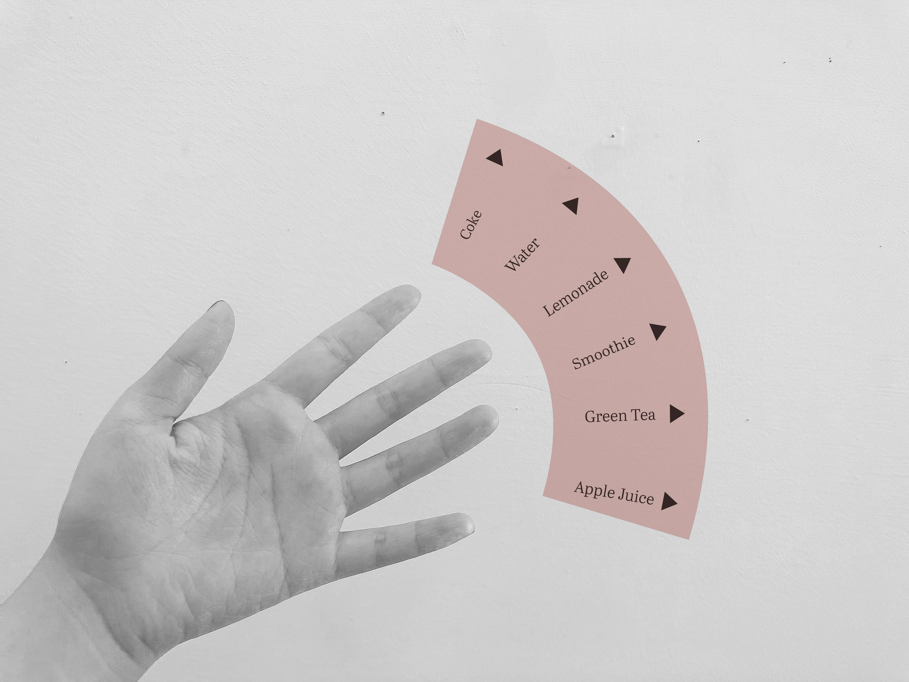
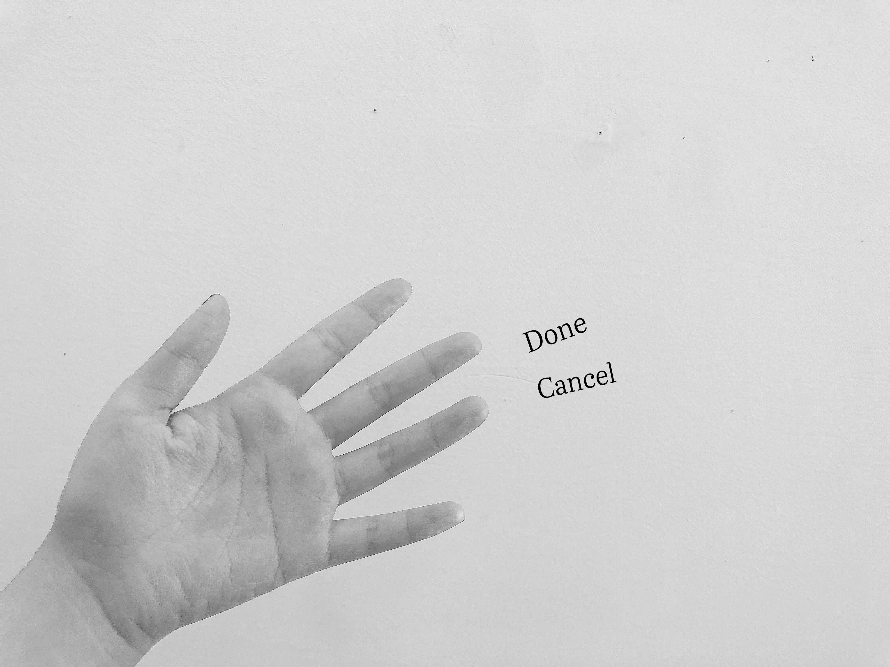
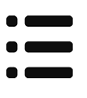

PM
Personal
Menu
Menu

W
h
a
t
h
a
t
In 2080, menu became a very important
tool for public.It follows people all the
time whenever they go. It always provide
options for people. For different people,
it provide different options depended on
the preference for individuals.This menu
and these options are only seen by the
person self.And other people cannot seen
your own menu. When you opened your hand
the menu will appear itself.
tool for public.It follows people all the
time whenever they go. It always provide
options for people. For different people,
it provide different options depended on
the preference for individuals.This menu
and these options are only seen by the
person self.And other people cannot seen
your own menu. When you opened your hand
the menu will appear itself.
H
o
w

o
w
Menu located on the right of your fingertips.
For example, if you want to choose drinks,
the menu will show the preference of the
person.
For example, if you want to choose drinks,
the menu will show the preference of the
person.

You can also choose some detail of your
choice.After the first step, you can choose
the flavor of the drink.

choice.After the first step, you can choose
the flavor of the drink.
Even more detail you can choose, the
numbers of the steps on the menu depends
on the subjects or the matters themselves.
numbers of the steps on the menu depends
on the subjects or the matters themselves.

The final step of your menu is confrim all
of your choice.You can choose Done and get
your final choice or choose Cancel to restart.
of your choice.You can choose Done and get
your final choice or choose Cancel to restart.
Why

Menu will become a very important daily tools for public.
Because of the increasing development of technology, people think much
less than today. Their thought mostly replaced and depended on new
technologies, which including many information. In that process, people
become lazy and less energetic and we need to using tools to help us
making some choices with less thinking. In the future, each people may
have a small technology which could provide any option for people in
any situation.
Because of the increasing development of technology, people think much
less than today. Their thought mostly replaced and depended on new
technologies, which including many information. In that process, people
become lazy and less energetic and we need to using tools to help us
making some choices with less thinking. In the future, each people may
have a small technology which could provide any option for people in
any situation.